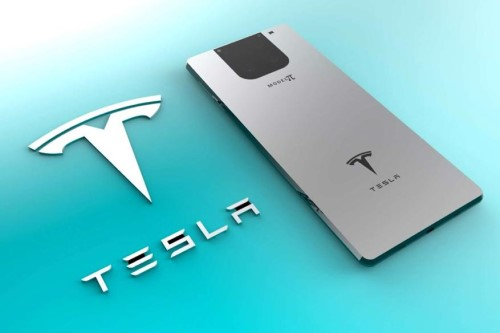
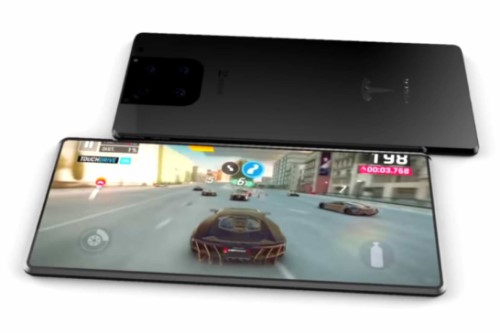
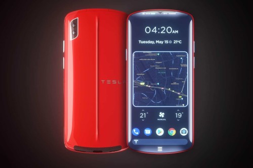
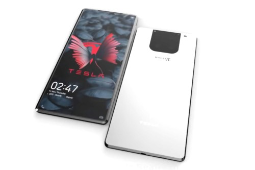

Илон Маск снова всех удивил. Презентован Tesla Phone, ожидающий старта продаж в конце 2022 года
Пост опубликован в блогах iXBT.com, его автор не имеет отношения к редакции iXBT.com
В 2022 году мир увидит новинку от Илона Маска — Tesla Phone. И это будет не просто смартфон, способный составить конкуренцию всем гигантам господствующим на рынке на сегодняшний день, а действительно лучший смартфон, который по всей вероятности оставит их на несколько шагов позади. Многие люди однозначно решат приобрести себе Tesla Phone, потому что это будет уникальный смартфон, с возможностями, которые еще никогда не были доступны в существующих на сегодняшний день смартфонах. Давайте посмотрим, какими стандартными характеристиками он обладает и что в нем есть уникального.

Технические характеристики

На сегодняшний день из презентации нам известно, что Tesla Phone будет снабжен:
- Процессор Qualcomm Snapdragon 8-ой серии;
- Объем оперативной памяти — 16 ГБ;
- Объем встроенной памяти — 512 ГБ / 1 ТБ;
- Быстрая зарядка USB Type-C — 100 Вт;
- Графеновый аккумулятор - емкость пока неизвестна;
- Скорость заряда с 0% до 100% — менее 10 минут;
- Водозащита IP68 — погружение до 2х метров.
Уникальные возможности Tesla Phone

В разработке Tesla Phone принимал непосредственное участие сам Илон Маск и, конечно же, смартфон имеет некоторые уникальные возможности. В тыльной части телефона разместилась солнечная панель, которая позволяет за 30 минут пребывания под солнцем зарядить устройство на 20%. Так, например, находясь в путешествии в дали от цивилизации, не имея возможности зарядить телефон, Вы сможете быть всегда на связи, просто подставляя телефон под солнечные лучи. Ни один из существующих флагманов не может похвастаться такой возможностью.

У космической компании Илона Маска SpaceX, запущен в реализацию проект Starlink по оснащению поверхности планеты скоростным интернетом посредством спутников. Tesla Phone обладает возможностью подключаться к этой сети напрямую и пользоваться скоростным спутниковым интернетом из любой точки планеты. При этом для покупателей смартфона данная сеть будет доступна бесплатно и без ограничений по времени.
Полная презентация Tesla Phone состоится позже, а старт продаж ожидается ближе к концу 2022 года. Во сколько Илон Маск оценит свою революционную новинку пока не известно.